Visão geral
Omnimorphos é um jogo de cartas para 2 jogadores. Cada jogador usa um baralho associado a um dos continentes do mundo de Omnimorphos e invoca omnitas (criaturas, guerreiros e espíritos), usa magias e equipamentos para derrotar o oponente.
O jogo cresce em níveis: cada carta jogada dá experiência (XP). Quanto mais XP, maior o seu nível, e cartas mais poderosas ficam disponíveis.
Preparação
- Cada jogador escolhe um baralho de pelo menos 60 cartas e o embaralha.
- Cada um compra 6 cartas. Se não gostar da mão, pode devolver tudo, embaralhar e comprar uma carta a menos (pode repetir).
- Depois de decidir a mão, cada um compra mais 1 carta.
- Uma moeda decide quem começa. Quem começa não compra carta no primeiro turno.
- Os dois começam com 20 de vida, nível 1 e 0 XP.
O turno
- Início: efeitos de início de turno acontecem (cura ou dano contínuo, cartas suspensas que entram, Proteção que expira) e você compra 1 carta.
- Fase Inicial: jogue cartas da mão, baixe omnitas, use habilidades de omnitas e totens.
- Combate: ataque com omnitas prontos (⚔). Nesta fase só Execuções Instantâneas podem ser jogadas.
- Fase Final: jogue mais cartas e use habilidades.
- Fim do turno: o dano marcado nos omnitas some, efeitos “até o fim do turno” acabam e a vez passa.
Experiência e nível
Toda carta jogada com sucesso dá a experiência indicada no canto superior direito dela (+N). Seu nível depende da experiência acumulada:
| Nível | Experiência acumulada |
|---|---|
| Nível 1 | 0–5 XP |
| Nível 2 | 6–10 XP |
| Nível 3 | 11–15 XP |
| Nível 4 | 16–25 XP |
| Nível 5 | 26–35 XP |
| Nível 6 | 36–50 XP |
| Nível 7 | 51–70 XP |
| Nível 8 | 71+ XP |
- Para jogar uma carta que não é omnita, seu nível precisa ser igual ou maior que o nível da carta.
- Omnitas que entram em jogo por efeito de outra carta (busca, ressurreição, fichas) não dão XP.
- Cartas de Conhecimento existem principalmente para dar XP: você só pode jogar 1 por turno.
Tipos de carta
Omnita
Criaturas que ficam no campo, atacam e bloqueiam. Têm ataque/defesa (ex.: 3/2) e às vezes habilidades.
Ficha
Omnitas criados por outras cartas. Não ficam no baralho e não dão XP.
Equipamento
Fica preso a um omnita e dá bônus ou habilidades. Alguns só servem em certos omnitas (Arqueiro, Humano, Lorde…). Vai para o cemitério se o omnita sair do campo.
Totem
Fica em jogo com um efeito permanente. Alguns têm uma habilidade de uso 1 vez por turno.
Conhecimento
Dá experiência (às vezes mais algum efeito). Só 1 por turno e não pode ser anulado.
Execução Regular
Magia de efeito único, jogada só nas fases Inicial ou Final do seu turno.
Execução Instantânea
Magia rápida: pode ser usada no seu turno (inclusive no combate) ou em resposta ao oponente.
Invocação e latência
Invocação: a soma dos níveis dos omnitas que você baixa num turno não pode passar do seu nível. Exemplo: no nível 4, você pode baixar um omnita de nível 4, ou um de nível 3 e outro de nível 1, e assim por diante.
Latência (💤): um omnita recém-baixado só pode atacar a partir do seu próximo turno, a não ser que tenha Ataque Rápido. Ele pode bloquear normalmente.
Suspender (⏳): algumas cartas podem ser baixadas suspensas. Ficam reveladas ao oponente e entram em jogo alguns turnos depois, com um bônus.
Combate
- Na fase de Combate, escolha um omnita pronto (⚔) e declare o ataque. Cada omnita ataca 1 vez por turno (Golpe Duplo: 2).
- O oponente escolhe se bloqueia com um ou mais omnitas, ou se recebe o dano direto na vida.
- Com vários bloqueadores, o atacante divide o dano entre eles, em ordem: cada bloqueador recebe o suficiente para ser destruído antes de passar ao próximo.
- Todos causam dano ao mesmo tempo. Omnita cujo dano recebido chega à defesa é destruído.
- Cada omnita só pode bloquear 1 ataque por turno.
- O dano que sobra num bloqueio não passa para o jogador, exceto com Atropelar.
- O dano marcado nos omnitas some no fim de cada turno.
🎲 Fora de Posição
Um omnita que atacou no seu último turno está longe da defesa. Se ele tentar bloquear no turno do oponente, jogue 1d6: com 1–3 ele chega a tempo e bloqueia; com 4–6 o bloqueio falha e o ataque segue (para os outros bloqueadores ou direto no jogador). Atacar é poderoso, mas deixa sua defesa exposta.
Respostas e anulação
Sempre que o oponente joga uma carta ou declara um ataque, você pode responder com uma Execução Instantânea. Algumas só podem ser usadas em resposta (por exemplo, quando um ataque é declarado ou depois de bloquear).
Anular: cartas como Criação Vazia e Desintegrar cancelam a carta que o oponente acabou de jogar. Cartas de Conhecimento não podem ser anuladas.
Cancelar: no jogo digital, enquanto você escolhe o alvo de uma carta ou habilidade, pode cancelar e ela volta para a mão, a não ser que já tenha rolado um dado ou moeda.
Vida, Proteção e cura
Vida: cada jogador começa com 20. Algumas cartas recuperam vida (Gaia é especialista nisso).
Proteção (🛡): funciona como um escudo que absorve o dano antes da vida. Vem principalmente de omnitas da Apólia (o número 🛡 na carta). Cada Proteção recebida dura 2 turnos seus: no início do seu 2º turno depois de recebê-la, o que sobrou dela some. O dano gasta primeiro a Proteção mais antiga.
Fogo: o dano das Execuções de fogo do Atharvash ignora a Proteção e causa +1 em omnitas com Voar.
Queimadura (🔥): quem recebe dano de um omnita com Queimadura não recupera vida até o fim do próprio próximo turno.
Cemitério e Vazio
Cemitério (🪦): para onde vão cartas jogadas, descartadas e omnitas destruídos. Algumas cartas recuperam cartas do cemitério.
Vazio (🌀): uma dimensão para onde certas cartas (principalmente do Kurai) mandam cartas. É mais difícil voltar do Vazio, mas algumas cartas de Kurai se fortalecem com ele.
Baralho (🂠): se você precisar comprar e não houver cartas, você perde.
Habilidades
No jogo, cada habilidade aparece como um ícone na carta. Toque ou passe o mouse sobre o ícone para ver a explicação.
Voar
Só pode ser bloqueado por omnitas com Voar ou Alcance.
Cartas: Falcão Kaldraniano de Fogo, Fada Mariposa Ardente, Fênix de Atharvash, Asas Mecânicas, Harpia Guerreira, Harpia Arqueira, Harpia Guerreiro, Feiticeira Harpia, Xamã, Harpia, Lorde do Vazio, Dragão de Gelo e mais 12
Alcance
Pode bloquear omnitas com Voar.
Cartas: Flechas Flamejantes, Elefante Lanceiro, Nativo Arqueiro, Pescador Kurainiano, Lanceiro de Apólia, Lança Solar
Ataque Rápido
Pode atacar no turno em que entra.
Cartas: Mestre Kaldraniano das Chamas, Arqueiro Kaldraniano, Cavaleira Drakara, Combatente Kaldraniano, Espadachim Kaldraniano, Falcão Kaldraniano de Fogo, Arqueiro Serpente de Apólia, Guerreiro Serpente de Apólia, Bruxa do Deserto
Golpe Duplo
Pode atacar duas vezes por turno.
Cartas: Espadachim Kaldraniano, Harpia Arqueira, Nativo Lutador, Sapo Ninja, Lutador Asuriano
Atropelar
O dano que sobra do combate vai para o oponente (o de Gaia atravessa a Proteção).
Cartas: Cavaleiro Elefante, Elefante Lanceiro, Onça, Gorila, Sapo Lutador, Kraken Ganancioso, Kophesh Solar
Consumir
Quando é destruído, destrói também a carta que o destruiu.
Cartas: Lorde do Vazio, Cavalo do Vazio, Morcego do Vazio, Demônio do Vazio
Montaria
Pode ser equipado em um humano/humanoide, somando ataque e defesa.
Cartas: Salamandra Vulcânica Filhote, Cavalo do Vazio, Camelo de Apólia, Phoru de Apólia, Cavalo de Guerra de Apólia, Leão do Sultão
Suspender
Pode ser baixado suspenso, revelado ao oponente; entra depois com um bônus.
Cartas: Lorde Aranthor, o Exilado, Combatente Kaldraniano, Harpia Guerreira
Queimadura
Quem recebe dano dele não recupera vida até o fim do próximo turno.
Cartas: Mestre Kaldraniano das Chamas, Espírito Elemental de Fogo, Salamandra Vulcânica Filhote, Falcão Kaldraniano de Fogo, Fada Mariposa Ardente, Fênix de Atharvash
Resistência ao Calor
Recebe 1 a menos de dano de fogo e de omnitas de Atharvash.
Cartas: Panda, Pescador Kurainiano, Tigre Nevado, Pangolim Nevado, Espírito Elemental de Gelo, Dragão de Gelo, Monge Iniciado Asura, Yeti, Golem de Gelo, Monge Adepto Asura, Asura, Monge Mestre Asura e mais 2
Estados dos omnitas
⚔ Pronto
Pode atacar neste turno.
💤 Latência
Baixado neste turno; ainda não pode atacar.
🎲 Fora de Posição
Atacou no último turno; para bloquear, precisa tirar 1–3 no dado.
🛡️✔ Já bloqueou
Já bloqueou um ataque neste turno.
❄️ Congelado
Não pode agir até o fim do próximo turno do dono (Coração Kuraniano).
⛓️ Preso
Preso pela Bruxa da Videira: não ataca, não bloqueia e não usa habilidades enquanto ela estiver em campo.
⏳ Suspenso / treinando
Fora de ação por alguns turnos; volta depois.
🛡️ Enrolado
Pangolim Nevado enrolado: fica 0/4 até sua próxima Fase Inicial.
✨ Habilidade disponível
Omnita ou totem com habilidade que você pode usar agora.
Continentes e ciclo
Cada baralho está associado a um continente e retrata uma de suas regiões. Nesta coleção inicial: Kaldran (Atharvash), Gaia do Sul (Gaia), o Reino de Asura (Kurai) e a civilização solar e seus desertos em Apólia. Próximas coleções vão trazer outras regiões e variações dos mesmos continentes (a história de cada região está na página Lore).
Os quatro baralhos iniciais formam um ciclo: cada um tem vantagem contra um, desvantagem contra outro, e um confronto equilibrado.
🔥 Fogo queima a floresta · 🌿 a natureza atropela o escudo · ☀ a luz revela o Vazio · ❄ o gelo resiste ao fogo
🔴 Atharvash
Kaldran · agressão e fogo · 63 cartas
Omnitas rápidos (Ataque Rápido), muito dano direto com Execuções de fogo e Queimadura para impedir a cura do oponente.
✔ Vence Gaia ✖ Perde para Kurai
🟢 Gaia
Gaia do Sul · natureza e crescimento · 62 cartas
Muitas cartas de Conhecimento para subir de nível, cura, animais grandes com Atropelar e voadores (Harpias).
✔ Vence Apólia ✖ Perde para Atharvash
🔵 Kurai
Reino de Asura · controle, gelo e Vazio · 62 cartas
Anula cartas, manda cartas para o Vazio, compra muito e tem omnitas com Resistência ao Calor e Consumir.
✔ Vence Atharvash ✖ Perde para Apólia
🟡 Apólia
Civilização solar · proteção e exército · 62 cartas
Muitos omnitas baratos que dão Proteção, equipamentos poderosos e voadores do deserto. A Luz repele o Consumir do Vazio.
✔ Vence Kurai ✖ Perde para Gaia
Montando baralhos
- Mínimo de 60 cartas; no máximo 4 cópias de cada carta.
- Voltar no Tempo é limitada a 1 por baralho.
- Pode misturar cartas de continentes diferentes. Veja como no Baralho personalizado.
- Dica: equilibre omnitas baratos e caros, inclua Conhecimento suficiente para subir de nível e algumas Execuções para responder ao oponente.
Baralho personalizado
Além dos 4 baralhos iniciais, você pode montar o seu próprio baralho com qualquer carta do jogo, misturando continentes como quiser.
Criando um baralho
- Na tela inicial, clique em Editor de baralhos.
- O editor abre com um baralho inicial carregado como ponto de partida. Use Esvaziar para começar do zero ou Carregar baralho… para partir de outro.
- À esquerda ficam todas as cartas. Filtre por continente, por tipo ou busque pelo nome ou texto, e clique numa carta para adicioná-la (até 4 cópias de cada; o número mostra quantas você já pôs).
- À direita fica o seu baralho: use + e − para ajustar as quantidades. O contador mostra o total e quanto falta para 60, e a linha abaixo mostra quantas cartas de cada tipo você tem.
- Dê um nome ao baralho e clique em Salvar. Ele aparece com cor roxa na lista de baralhos da tela inicial.
Usando o baralho
- Contra o computador: escolha o seu baralho em “Seu baralho”. Ele também pode ser escolhido como baralho do computador, para testar seu deck do outro lado.
- 2 jogadores no mesmo aparelho: cada jogador pode escolher qualquer baralho, inclusive os personalizados.
- Online: o seu baralho personalizado vai com você para a sala; o outro jogador não precisa tê-lo.
Editar, excluir e compartilhar
- Para editar, abra o editor, escolha o baralho em Carregar baralho…, faça as mudanças e salve com o mesmo nome.
- Excluir apaga o baralho com o nome atual (só os seus; os iniciais não podem ser apagados).
- Compartilhar: em “Compartilhar (código do baralho)”, clique em Gerar código e mande o texto para um amigo. Ele cola o código, clica em Importar código e depois em Salvar.
- Os baralhos ficam salvos no navegador do aparelho. Para levar um baralho do computador para o celular, use o código de compartilhar. Limpar os dados do navegador apaga os baralhos salvos.
Dicas para montar
- Os baralhos iniciais têm por volta de 25 omnitas, 17 a 19 cartas de Conhecimento e o resto entre Execuções, Equipamentos e Totens. É um bom ponto de partida.
- Conhecimento suficiente é o que faz você subir de nível; com pouco, suas cartas caras ficam presas na mão.
- Tenha omnitas de nível baixo para os primeiros turnos e alguns grandes para o fim da partida.
- Cartas que buscam outras (Drakara, Cavaleiro Elefante, Bruxa Gélida, Estábulo…) funcionam melhor com os alvos certos no baralho.
- Misturar continentes é permitido, mas as sinergias (Kaldranianos, Harpias, Monges, Vazio, Montarias…) costumam ser mais fortes num continente só.
Modos de jogo
🤖 Contra o computador
Três dificuldades: Fácil, Normal e Difícil.
👥 2 jogadores (mesmo aparelho)
Passem o aparelho a cada turno; o jogo esconde a mão de quem não está jogando.
🌐 Online (código de sala)
Um jogador cria a sala e envia o código de 5 letras; o outro digita o código e entra. Cada um vê só a própria mão.
Controles
🖱️ No computador
Clique numa carta com brilho dourado para jogá-la. No Combate, clique num omnita com brilho vermelho para atacar. Passe o mouse sobre uma carta para ver os detalhes à direita.
📱 No celular
Toque numa carta da mão para levantá-la e toque de novo para jogar. Segure o dedo numa carta para ver a carta grande com todos os detalhes.
🎲 Dados 3D
Dados e moedas rolam em 3D. Dá para desligar na tela inicial ou na ajuda (?).
Todas as cartas
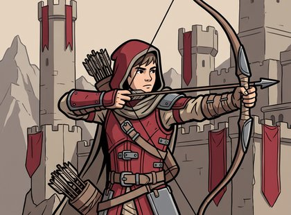
Os jovens Kaldranianos podem surpreender com os equipamentos corretos.
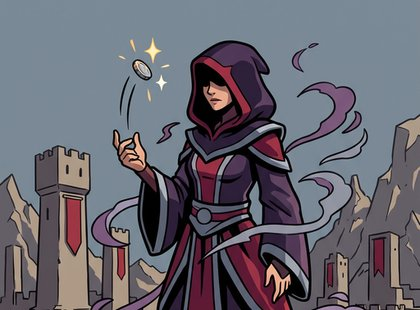
Ao entrar, jogue uma moeda: se ganhar, o oponente queima 2 por 3 turnos. Se perder, você queima 2 por 3 turnos.
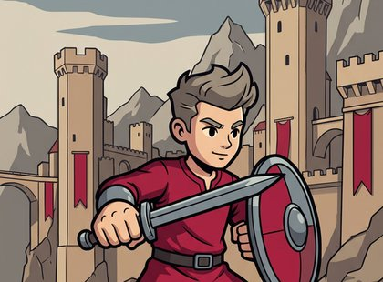
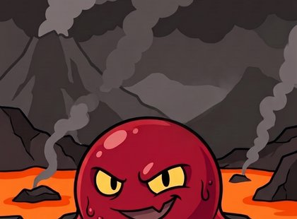
Quando esta carta é derrotada em combate, o oponente recebe 1 de dano.
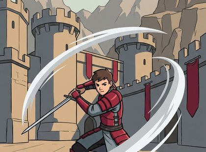
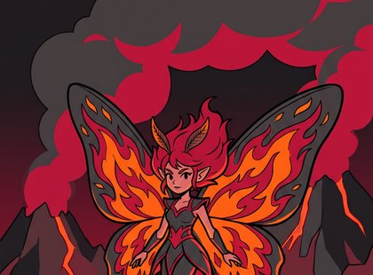
Quando esta carta é baixada, o oponente é impedido de baixar omnitas no próximo turno.
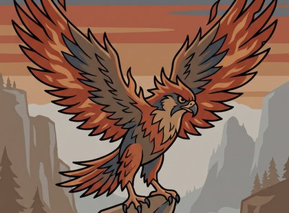
Símbolo da nobreza do império Kaldraniano.
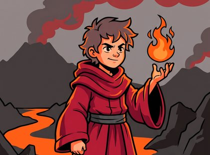
Uma vez por turno: escolha um alvo para receber 2 de dano.
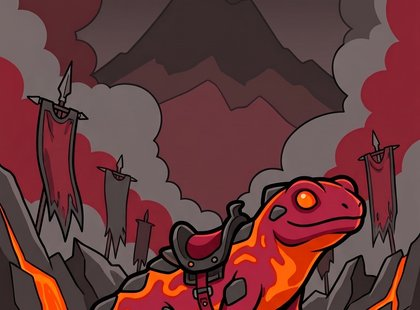
Uma pequena salamandra comum das regiões vulcânicas.
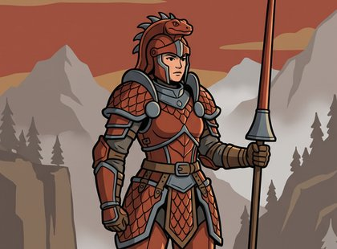
Quando Drakara entrar, procure no baralho outro omnita Réptil e adicione à mão. Embaralhe.
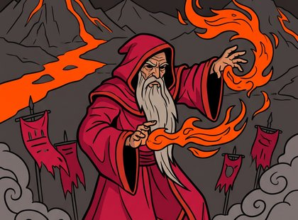
Toda vez que uma Execução Instantânea com efeito queimar é ativada, esta carta ganha +1/+0 até o fim do turno.
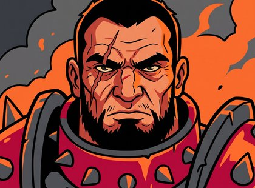
Recebe +1/+1 para cada omnita Kaldraniano no seu cemitério.
O que importa é a vitória... e ninguém irá me impedir.
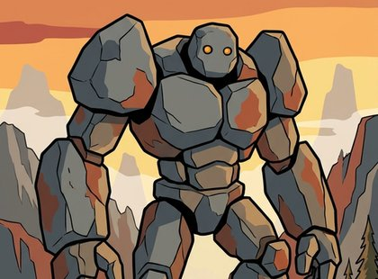
Quando esta carta for para o cemitério, gere duas fichas 2/2 de Golem Inferior.
Um golem que habita as montanhas de Atharvash.
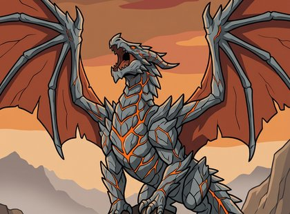
Tremor: quando esta carta entra, o oponente descarta 2 cartas.
Um dragão que habita as montanhas de Atharvash.
Este urso imponente percorre as cordilheiras de Atharvash.
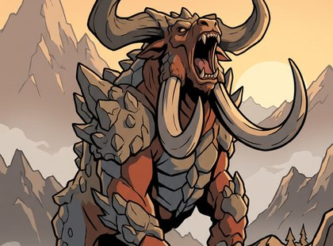
Um monstro de origem natural que habita as cordilheiras de Atharvash.
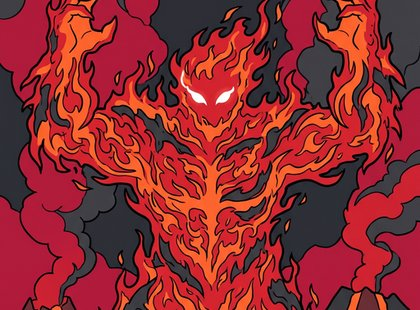
Se esta carta atacar o oponente diretamente, jogue um d6: este é o número de ataques que ele recebe.
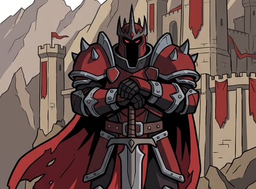
Cada omnita destruído por Aranthor vira uma ficha Zumbi 1/1 sua.
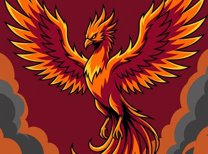
Sempre que for enviada do campo ao cemitério, retorna ao campo no início do seu próximo turno. Ataque e defesa = número de Execuções Instantâneas no seu cemitério.
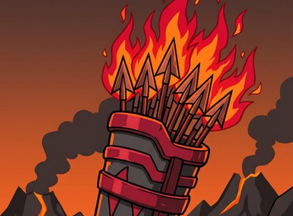
Equipe em um omnita Arqueiro: ele pode atacar direto os pontos de vida do oponente (não pode ser bloqueado) e ganha Alcance.
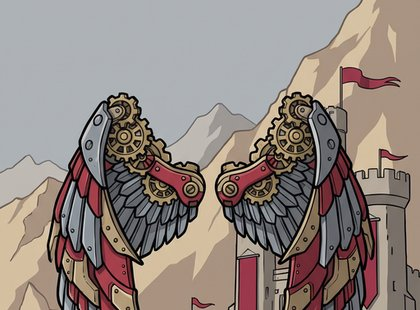
O omnita equipado ganha Voar. Quando esta carta for ao cemitério, você pode pagar 1 de vida para recuperá-la.
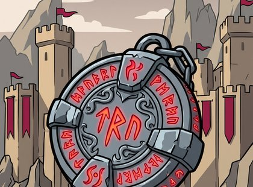
O omnita equipado fica imune a efeitos de Execuções Instantâneas.
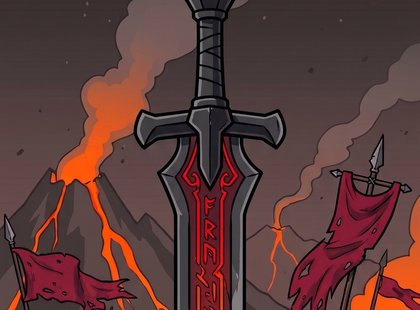
Equipe em um omnita Lorde: +2/+2 e Obstinação (só pode ser bloqueado por dois ou mais omnitas).
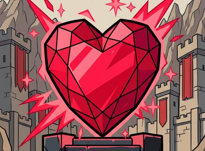
Sempre que um omnita de Atharvash seu causar dano, receba 1 de experiência.
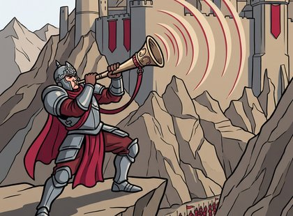
Escolha no baralho até 1 omnita Kaldraniano e suspenda por 2 turnos; no fim da suspensão adicione-o à sua mão. Embaralhe.
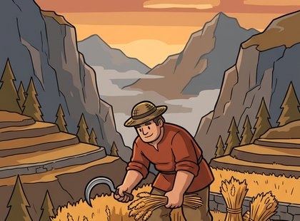
Olhe a primeira carta do seu baralho, adicione à mão e descarte uma carta.
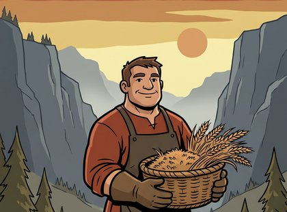
Olhe a primeira carta do seu baralho, mostre ao oponente e adicione à mão.
Separando o joio do trigo.
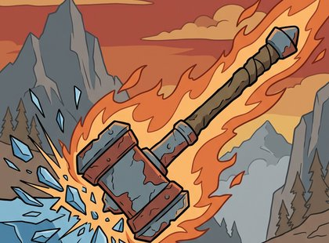
Se o oponente tiver uma carta de Kurai ativa no jogo, ele envia as duas primeiras cartas do baralho para o cemitério.
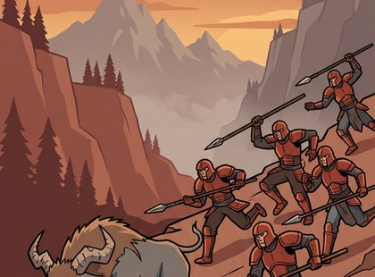
Se seu oponente possui apenas 1 omnita em jogo, os omnitas que você controla recebem +1/+0 até que sejam enviados ao cemitério.
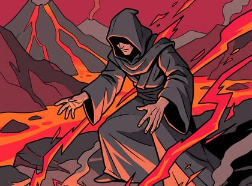
Ao custo de 9 pontos de vida, busque no baralho ou cemitério um omnita nível 6 ou inferior e coloque-o em jogo sem seus efeitos ou habilidades.
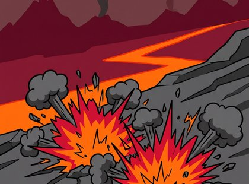
Escolha até dois omnitas e cause 2 de dano a cada um.
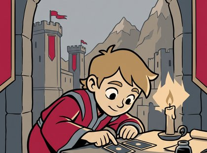
Olhe as duas primeiras cartas do seu baralho e organize em qualquer ordem.
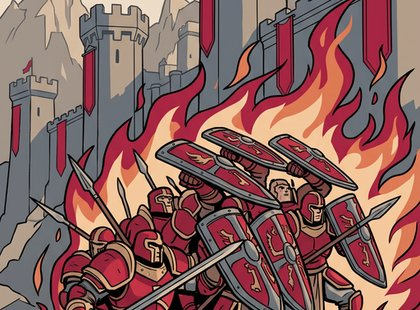
Todos os seus omnitas ganham +0/+2 até o fim do turno.
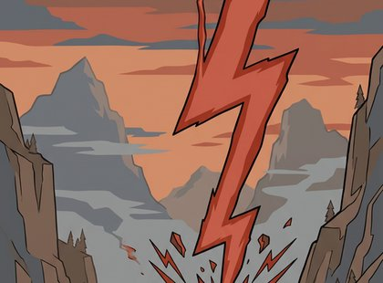
Cause 2 de dano a qualquer alvo. Fogo: ignora Proteção; voadores recebem +1.
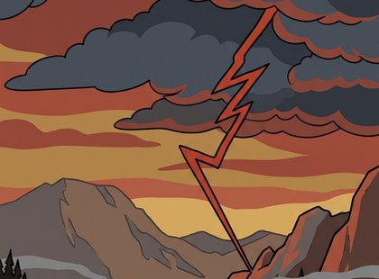
Cause 1 de dano a qualquer alvo. Fogo: ignora Proteção; voadores recebem +1.
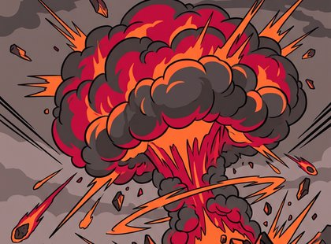
Cause 2 de dano a todos os omnitas oponentes. A cada omnita eliminado neste turno, receba 2 de experiência.
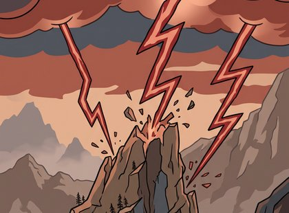
Cause 3 de dano a qualquer alvo. Fogo: ignora Proteção; voadores recebem +1.
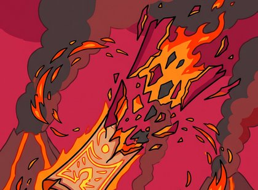
Anule uma carta não omnita. Caso a execução desta carta seja bem-sucedida, seu oponente compra uma carta.
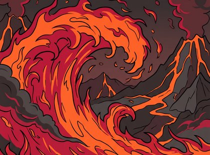
Cause 2 de dano a todos os omnitas do oponente.
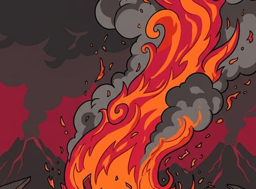
Descarte uma quantidade N de cartas e cause a mesma quantidade de dano direto ao oponente.
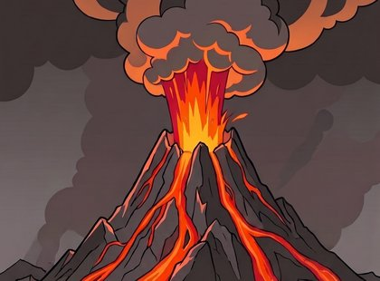
Todos os omnitas em campo são destruídos.
A lava consome tudo.
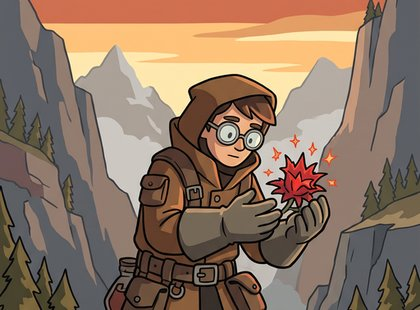
Receba 5 de experiência. Esta carta não pode ser anulada. Jogue uma moeda: se ganhar, cause 2 de dano a qualquer alvo.
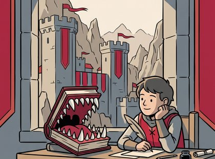
Receba 2 de experiência. Esta carta não pode ser anulada. Cause 1 de dano a qualquer alvo.
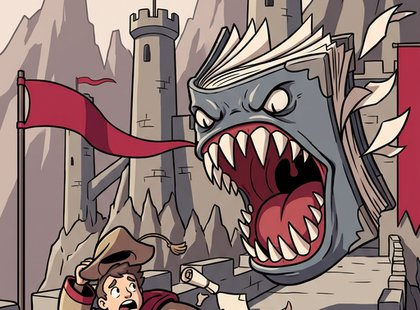
Receba 2 de experiência. Esta carta não pode ser anulada. Você recebe 1 de dano.
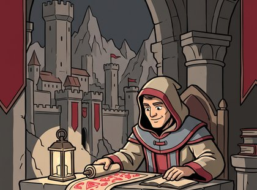
Receba 4 de experiência. Esta carta não pode ser anulada.
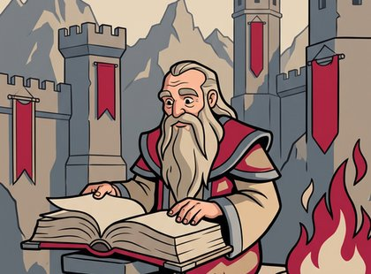
Receba 3 de experiência. Esta carta não pode ser anulada.
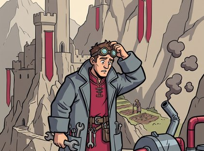
Jogue um d6: receba a quantidade que cair de experiência. Esta carta não pode ser anulada.
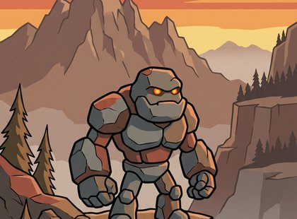
Ficha criada por outra carta.
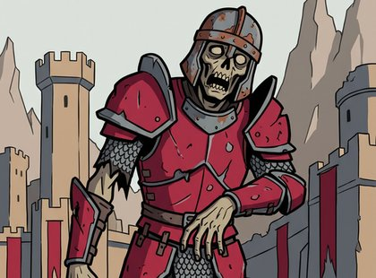
Ficha criada por outra carta.
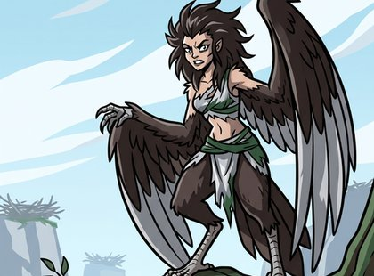
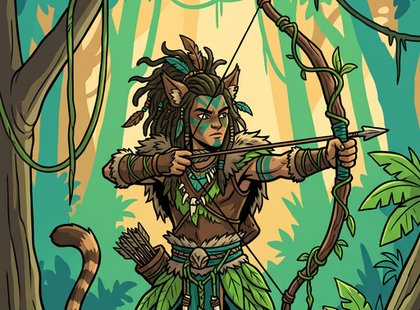
Um tribal comum nas regiões de Gaia do Sul.
Quando esta carta entrar, pegue uma carta aleatória da mão do oponente.
Esta carta recebe +1/+1 para cada carta que destruir em combate.
Quando esta carta entra, prenda um omnita oponente: enquanto ela estiver em jogo, ele não poderá participar de combates nem usar habilidades.
Veneno: se o ataque for direto ao oponente, ele perde 2 pontos de vida por 3 turnos.
Esta carta ganha +1/+1 para cada outra ave ativa no jogo.
Um animal de grande porte e alta velocidade encontrado em Gaia.
Quando esta carta entra em jogo, crie duas cópias fichas 1/1 que permanecem em jogo até o final do turno.
Encantar: se esta carta for alvo de um ataque, role um d6. Se o resultado for 3 ou menos, ela não recebe dano desse ataque.
Quando esta carta entrar em jogo, procure em seu baralho outro omnita Elefante e adicione à mão. Embaralhe.
Um animal de grande porte e grande força encontrado em Gaia.
Uma vez por turno, você pode olhar a carta do topo do seu baralho. Se for uma carta omnita, ganhe 2 de experiência.
Como custo adicional para jogar esta carta, ofereça um omnita ativo: envie o omnita escolhido para o cemitério.
Esta carta recebe +1/+1 para cada omnita de tipo animal que você controla em jogo.
Sempre que você comprar 1 carta, recupere 1 de vida.
(Simplificado) Sempre que um omnita animal seu seria destruído por um efeito (fora de combate), você pode descartar uma carta para evitar a destruição.
Recupere 4 pontos de vida.
Escolha uma carta animal do seu baralho e adicione à mão. Embaralhe.
Procure em seu cemitério ou baralho uma carta Totem e adicione à mão. Embaralhe.
Recupere do seu cemitério uma carta omnita animal e adicione à mão. (Humanos comuns não contam; Humano Ave, Bruxo etc. contam.)
Recupere 2 pontos de vida.
Se o oponente não tiver nenhum omnita em jogo, olhe a mão dele, escolha um omnita e jogue um d6. 1-2: a carta vai para o cemitério. 3-4: vai para o vazio. 5-6: entra em jogo do seu lado.
Recupere 2 pontos de vida por 3 turnos.
Quando o oponente declarar um ataque, escolha uma Harpia sua: ela bloqueia esse ataque, ignorando qualquer restrição de bloqueio.
Se seu omnita fosse destruído em combate neste turno, em vez disso envie-o para o vazio por 2 turnos. Depois, ele retorna ao jogo.
Todos os nativos em jogo ganham +2/+0 neste turno.
Compre 1 carta.
Se o oponente declarar um ataque com um omnita de defesa 3 ou menor, destrua o omnita atacante.
Use esta carta em resposta à ativação de uma Execução Instantânea: recupere 2 pontos de vida.
Compre 2 cartas.
Receba 2 de experiência. Esta carta não pode ser anulada.
Receba 4 de experiência. Esta carta não pode ser anulada.
Receba 2 de experiência. Esta carta não pode ser anulada.
Receba 4 de experiência. Esta carta não pode ser anulada. Receba 1 ponto de vida.
Receba 3 de experiência. Esta carta não pode ser anulada. Compre uma carta.
Ficha criada por outra carta.
Quando esta carta entrar, cause 2 de dano por 2 turnos ao omnita escolhido.
Um golem criado pelos monges de Asura.
Um monge habitante comum na região de Kurai.
Quando esta carta entrar, procure um omnita do vazio no seu baralho e adicione à mão. Embaralhe.
Um monge habitante comum na região de Kurai.
Quando esta carta entrar, procure uma Execução Instantânea no seu baralho e adicione à mão. Embaralhe.
Pode se enrolar na fase inicial, trocando ataque e defesa para 0/4 até a sua próxima fase inicial.
Uma espécie de felino de Kurai.
Uma espécie de troll de tamanho reduzido encontrada em tribos de Kurai.
Quando esta carta entra em jogo, ganhe experiência igual ao número de cartas no vazio. Sempre que uma carta for enviada ao vazio, ganhe 1 de experiência.
Uma vez por turno: jogue um d20; se o resultado for acima de 15, escolha uma carta ativa e destrua.
Vive nas cavernas geladas de Kurai e possui uma pseudo consciência.
Como custo adicional para jogar esta carta, envie 3 cartas da sua mão ao vazio.
Equipe a um omnita: +1/+1. Sempre que o omnita equipado vencer um combate, envie o omnita derrotado para o vazio em vez do cemitério.
Equipe a um omnita (inclusive do oponente): sempre que esse omnita declarar um ataque, cause 1 de dano ao seu controlador.
Seus omnitas de Kurai em jogo ganham Congelar: uma vez por turno, você pode impedir um omnita oponente de realizar qualquer ação até o fim do próximo turno dele. Se executar com sucesso, ganhe 1 de experiência.
Toda vez que uma carta sua seria enviada ao cemitério, envie-a ao vazio.
Escolha uma carta aleatória da mão do seu oponente e envie ao vazio.
Recupere um omnita de qualquer vazio e adicione ao seu lado do campo (com Latência).
Jogue este turno como se estivesse um nível acima. Compre 1 carta.
Se existir um omnita Monge do seu lado do campo, busque em seu baralho uma carta de nome Asura e suspenda por 2 turnos; depois ela entra em jogo. Embaralhe.
Como custo adicional, reduza 5 da sua experiência. Olhe a mão do oponente e escolha uma carta: ela e todas as suas cópias (mão, baralho e cemitério do oponente) são enviadas ao vazio.
Só pode ser usada como a primeira carta do seu turno. Todas as ações realizadas pelo oponente no último turno são desfeitas: vida, XP, cartas jogadas e omnitas voltam ao estado anterior. Depois continue seu turno normalmente. Limitada a 1 por baralho.
Seu oponente compra 1 carta, você compra 1 carta.
Destrua um Totem.
Compre 2 cartas.
Destrua todos os omnitas que não são de Kurai.
Envie um omnita nível 2 ou inferior do oponente para o vazio.
Procure uma carta Conhecimento no seu baralho e adicione à mão. Embaralhe.
Anule a carta declarada pelo oponente e envie-a ao vazio.
Crie uma ficha Manequim de Treinamento 1/1.
O omnita escolhido recebe -1/-3 até que deixe o campo.
Procure uma Execução Instantânea no seu baralho e adicione à mão. Embaralhe.
Receba 4 de experiência. Esta carta não pode ser anulada.
Receba 3 de experiência. Esta carta não pode ser anulada. Compre 1 carta.
Receba 2 de experiência. Esta carta não pode ser anulada.
Receba 3 de experiência. Esta carta não pode ser anulada.
Receba 2 de experiência. Esta carta não pode ser anulada. Compre 1 carta.
Ficha criada por outra carta.
Você pode pagar 2 de XP para recuperar esta carta do cemitério (oferecido no início do seu turno).
Ataca diretamente os pontos de vida do oponente (ignora a Proteção).
Ao entrar, selecione uma carta aleatória na mão do oponente e veja.
Ao entrar, procure em seu baralho uma Execução Regular e adicione à mão. Embaralhe.
Ao entrar, escolha uma carta sua: ela fica imune a Execuções Instantâneas e Regulares enquanto o Mago estiver em campo.
Uma única vez, você pode assumir a forma de um omnita oponente, recebendo seu ataque e defesa em substituição aos desta carta. Não pode ser desfeito.
Esta carta não pode ser destruída por efeito de outra carta. Uma vez por turno, você pode consumir 2 pontos de Proteção e transformá-los em +2/+0 até o fim do turno.
Esta carta precisa esperar 3 turnos antes do seu primeiro ataque.
Equipe a um omnita Arqueiro: +2/+0. Ele pode atacar diretamente o oponente (não pode ser bloqueado).
Equipe a um omnita Mago/Bruxo: +1/+0. Uma vez por turno, o omnita equipado pode escolher um omnita: ele não poderá bloquear neste turno.
Equipe a um omnita Humanoide/Humano: +3/+0.
O omnita equipado recebe +0/+2.
Equipe a um omnita Guerreiro: +2/+1. Obstinação: só pode ser bloqueado por 2 ou mais omnitas.
Equipe a um omnita Humanoide/Humano: +2/+0. O omnita equipado transfere o dano que sobrar de um combate para o oponente.
Equipe a um omnita Humanoide/Humano: +2/+0 e Alcance.
Receba 1 de Proteção por turno.
Procure em seu baralho e coloque em campo um omnita de nível 1. Ele não precisa esperar a Latência.
Crie duas fichas 1/1 de Djin com Voar.
Procure um omnita com Montaria no seu baralho e adicione à mão. Embaralhe.
Procure um equipamento no seu baralho e adicione à mão. Embaralhe.
Anexe esta carta à Deusa Apólia: ela recebe +7/+7. (Texto do PDF parcialmente ilegível; versão simplificada.)
Se você controla algum omnita com Voar, cause 4 de dano a um omnita.
Quando um omnita declarar um ataque, ele recebe -1/-1.
Use depois de bloquear: transfira o ataque destinado ao(s) seu(s) omnita(s) para um omnita do oponente. Se não for possível, anule o ataque.
Escolha um omnita para receber +4/+4 até o fim do turno.
Compre 1 carta.
Escolha um omnita e suspenda-o por 1 turno; ao retornar ele recebe +1/+1.
Escolha um omnita para receber +10/+10 até o fim do turno. Ao fim do turno, este omnita vai para o cemitério.
Receba 3 de experiência. Esta carta não pode ser anulada.
Receba 3 de experiência. Esta carta não pode ser anulada.
Receba 2 de experiência. Esta carta não pode ser anulada.
Receba 2 de experiência. Esta carta não pode ser anulada.
Receba 4 de experiência. Esta carta não pode ser anulada.
Complete a experiência que falta para subir um nível.
Um geodo encontrado, uma vez a cada milênio.